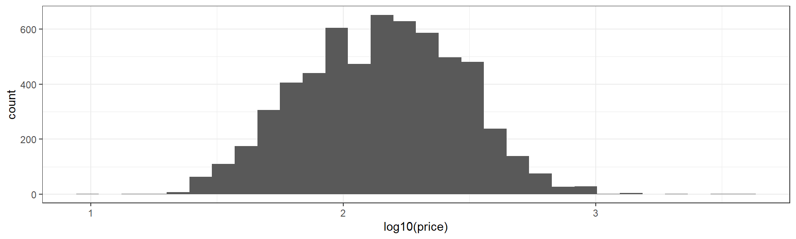
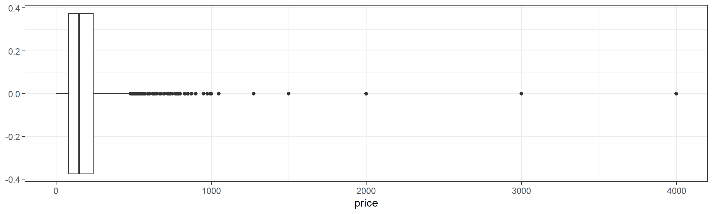
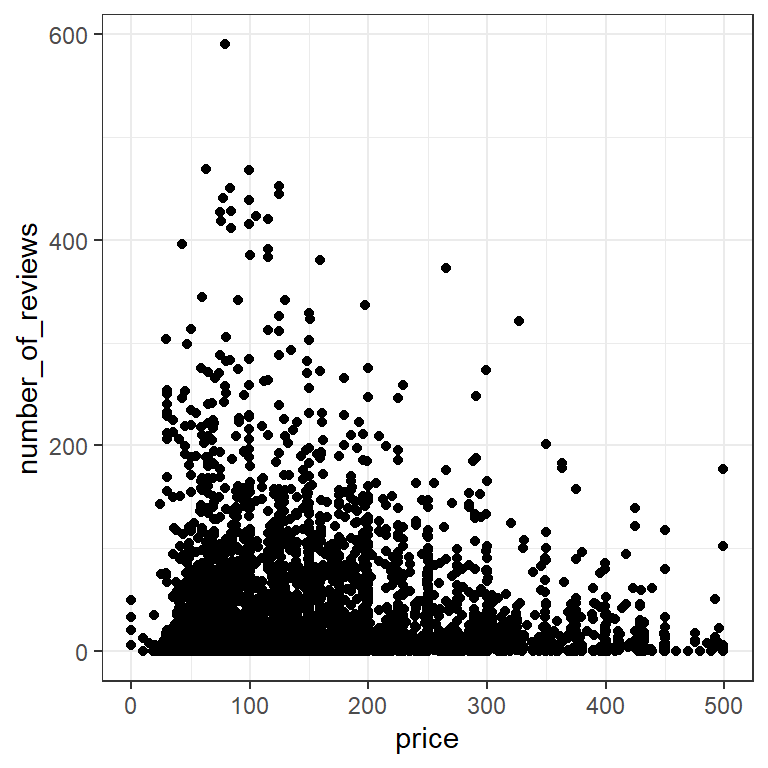

library(tidyverse)
listings <- read_csv("data/Boston_listings.csv")beginR: Exploratory Data Analysis (EDA)
Data and other downloads
Reminders and Notes:
Start a New Project in R
It is best practice to set up a new directory each time we start a new project in R. To do so, complete the following steps:
- Go to File > New Project > New Directory > New Project.
- Type in a name for your directory and click Browse. Be sure to pick a place for your directory that you will be able to find later.
- Go to Finder on Mac or File Explorer on PC and find the directory you just created.
- Inside your project directory, create a new folder called data.
- Download or copy the data file (Boston_listings.csv) into the data folder.
- Go to File > Save As to give your R script a name and save it in your project directory.
Note: Tibbles vs Data Frames
Most tidyverse functions, including read_csv, output tibble objects. A dataset stored as a tibble will return tbl and tbl_df in its class.
class(listings)[1] "spec_tbl_df" "tbl_df" "tbl" "data.frame" A tbl_df prints different details than a traditional data.frame.
head(listings)# A tibble: 6 × 36
id listing_url neighbourhood neighbourhood_cleansed city state zipcode
<dbl> <chr> <chr> <chr> <chr> <chr> <chr>
1 3781 https://www.ai… East Boston East Boston Bost… MA 2128
2 5506 https://www.ai… Roxbury Roxbury Bost… MA 2119
3 6695 https://www.ai… Roxbury Roxbury Bost… MA 2119
4 6976 https://www.ai… Roslindale Roslindale Bost… MA 2131
5 8789 https://www.ai… Beacon Hill Downtown Bost… MA 2108
6 8792 https://www.ai… Beacon Hill Downtown Bost… MA 2108
# ℹ 29 more variables: latitude <dbl>, longitude <dbl>, property_type <chr>,
# room_type <chr>, accommodates <dbl>, bathrooms <dbl>, bedrooms <dbl>,
# beds <dbl>, bed_type <chr>, price <dbl>, security_deposit <dbl>,
# cleaning_fee <dbl>, guests_included <dbl>, extra_people <chr>,
# minimum_nights <dbl>, maximum_nights <dbl>, number_of_reviews <dbl>,
# first_review <chr>, last_review <chr>, review_scores_rating <dbl>,
# review_scores_accuracy <dbl>, review_scores_cleanliness <dbl>, …In some cases, when using packages outside the tidyverse, we can avoid or fix problems by converting a tbl_df into a data.frame with as.data.frame. Note that head prints all columns of the dataset and does not specify the datatype of each column.
listings.df <- as.data.frame(listings)
class(listings.df)[1] "data.frame"head(listings.df) id listing_url neighbourhood neighbourhood_cleansed
1 3781 https://www.airbnb.com/rooms/3781 East Boston East Boston
2 5506 https://www.airbnb.com/rooms/5506 Roxbury Roxbury
3 6695 https://www.airbnb.com/rooms/6695 Roxbury Roxbury
4 6976 https://www.airbnb.com/rooms/6976 Roslindale Roslindale
5 8789 https://www.airbnb.com/rooms/8789 Beacon Hill Downtown
6 8792 https://www.airbnb.com/rooms/8792 Beacon Hill Downtown
city state zipcode latitude longitude property_type room_type
1 Boston MA 2128 42.36524 -71.02936 Apartment Entire home/apt
2 Boston MA 2119 42.32981 -71.09559 Guest suite Entire home/apt
3 Boston MA 2119 42.32994 -71.09351 Condominium Entire home/apt
4 Boston MA 2131 42.29244 -71.13577 Apartment Private room
5 Boston MA 2108 42.35919 -71.06265 Apartment Entire home/apt
6 Boston MA 2108 42.35850 -71.06201 Apartment Entire home/apt
accommodates bathrooms bedrooms beds bed_type price security_deposit
1 2 1 1 1 Real Bed 125 0
2 2 1 1 1 Real Bed 145 0
3 4 1 1 2 Real Bed 169 NA
4 2 1 1 1 Real Bed 65 0
5 2 1 1 1 Real Bed 99 1000
6 2 1 1 1 Real Bed 154 1000
cleaning_fee guests_included extra_people minimum_nights maximum_nights
1 75 2 $0.00 30 1125
2 40 1 $0.00 3 730
3 70 2 $8.00 3 730
4 0 1 $20.00 3 60
5 150 1 $0.00 14 365
6 250 1 $0.00 20 365
number_of_reviews first_review last_review review_scores_rating
1 14 7/10/2015 7/2/2018 99
2 71 3/21/2009 9/3/2018 95
3 75 8/6/2009 8/26/2018 96
4 68 7/19/2009 7/31/2018 98
5 18 8/12/2014 8/27/2018 91
6 24 10/11/2009 8/15/2018 93
review_scores_accuracy review_scores_cleanliness review_scores_checkin
1 10 10 10
2 10 10 10
3 10 10 10
4 10 9 10
5 9 9 10
6 10 9 10
review_scores_communication review_scores_location review_scores_value
1 10 10 10
2 10 9 10
3 10 9 9
4 10 9 10
5 10 10 9
6 10 10 9
cancellation_policy calculated_host_listings_count reviews_per_month
1 super_strict_30 2 0.36
2 strict_14_with_grace_period 6 0.61
3 strict_14_with_grace_period 6 0.68
4 moderate 1 0.61
5 strict_14_with_grace_period 11 0.36
6 strict_14_with_grace_period 11 0.22What is Exploratory Data Analysis?
Exploratory Data Analysis (EDA) is the process of exploring your data, focused on discovering patterns rather than statistical testing. R for Data Science breaks this down into three steps:
- Generate questions about your data.
- Search for answers by visualizing, transforming and modelling your data.
- Use what your learn to refine your questions and/or generate new questions.
This process can be repeated many times.
What do we have? - dim, str, and summary
Before we start asking questions of our dataset, we need to determine the basic contents of the dataset.
dim(listings)[1] 5957 36We have 36 variables (columns) across 5957 observations (rows).
Note: Indexing
In R, we can use square brackets, [], to quickly select a subset of rows and/or columns by position using numeric indices. Unlike some programming languages, R starts counting positions at 1 instead of zero.
For example, if we want to look at row 5, column 3 of our listings data frame, we can do it like so:
listings[5,3]# A tibble: 1 × 1
neighbourhood
<chr>
1 Beacon Hill There are a number of different ways we can use indexing to subset our data:
listings[,1] # column 1
listings[,7:10] # columns 7 through 10
listings[,c(1,8,11)] # columns 1, 8 and 11
listings[2,] # row 2
listings[3:9,] # rows 3 through 9
listings[c(7,10),] # rows 7 and 10For a vector, we only need one number to describe position:
myvec <- c("a","b","c","d","e","f","g")
myvec[1] "a" "b" "c" "d" "e" "f" "g"myvec[1][1] "a"myvec[4:7][1] "d" "e" "f" "g"myvec[c(1,3,7)][1] "a" "c" "g"str and summary (with Indexing)
We can use str and summary to learn more about each of these 36 variables. We’ll use indexing to get results for only the first four columns with str
str(listings[,1:4])tibble [5,957 × 4] (S3: tbl_df/tbl/data.frame)
$ id : num [1:5957] 3781 5506 6695 6976 8789 ...
$ listing_url : chr [1:5957] "https://www.airbnb.com/rooms/3781" "https://www.airbnb.com/rooms/5506" "https://www.airbnb.com/rooms/6695" "https://www.airbnb.com/rooms/6976" ...
$ neighbourhood : chr [1:5957] "East Boston" "Roxbury" "Roxbury" "Roslindale" ...
$ neighbourhood_cleansed: chr [1:5957] "East Boston" "Roxbury" "Roxbury" "Roslindale" ...The equivalent way to do this using dplyr and the %>% we learned last week would be:
listings %>%
select(id, listing_url, neighbourhood, neighbourhood_cleansed) %>%
str()tibble [5,957 × 4] (S3: tbl_df/tbl/data.frame)
$ id : num [1:5957] 3781 5506 6695 6976 8789 ...
$ listing_url : chr [1:5957] "https://www.airbnb.com/rooms/3781" "https://www.airbnb.com/rooms/5506" "https://www.airbnb.com/rooms/6695" "https://www.airbnb.com/rooms/6976" ...
$ neighbourhood : chr [1:5957] "East Boston" "Roxbury" "Roxbury" "Roslindale" ...
$ neighbourhood_cleansed: chr [1:5957] "East Boston" "Roxbury" "Roxbury" "Roslindale" ...We’ll use summary with the 5th, 6th, and 12th columns.
summary(listings[,c(5,6,12)]) city state accommodates
Length:5957 Length:5957 Min. : 1.00
Class :character Class :character 1st Qu.: 2.00
Mode :character Mode :character Median : 3.00
Mean : 3.38
3rd Qu.: 4.00
Max. :16.00 To get the same results using dplyr and the %>%, we could use:
listings %>%
select(city, state, accommodates) %>%
summary() city state accommodates
Length:5957 Length:5957 Min. : 1.00
Class :character Class :character 1st Qu.: 2.00
Mode :character Mode :character Median : 3.00
Mean : 3.38
3rd Qu.: 4.00
Max. :16.00 Frequency - Univariate EDA
A natural starting place for EDA is learning more about individual variables. We’re often interested in the relative frequency of different values of a given variable.
Categorical Variables
What types of beds are most popular in Boston AirBnBs?
table
table provides a simple frequency table for a categorical (usually factor or character) variable.
table(listings$bed_type)
Airbed Couch Futon Pull-out Sofa Real Bed
31 5 32 19 5870 Clearly “Real Bed” is the most popular bed type. Interestingly, it appears that Airbeds are more popular than Couches and Pull-out Sofas combined!
Bar Charts with geom_bar
We can also represent categorical variables with a bar chart, using ggplot and geom_bar. By default, geom_bar uses the x aesthetic and provides a count of the frequency of each category across the dataset.
ggplot(data=listings,aes(x=bed_type))+
geom_bar(width=0.5)+
theme_bw()Note: Calling fct_infreq will quickly re-arrange our categories to be plotted in frequency order. I’ve also used the width parameter for geom_bar to make the bars half as wide.
ggplot(data=listings,aes(x=fct_infreq(bed_type)))+
geom_bar(width=0.5)+
theme_bw()Continuous Variables
What is the distribution of prices for AirBnB listings in Boston?
Unfortunately, with continuous variables, we usually have too many distinct values to make a table or bar chart useful.
ggplot(data=listings,aes(x=price))+
geom_bar()+
theme_bw()Histograms with geom_hist
A common way to overcome this problem is to bin values into ranges with a histogram.
ggplot(data=listings,aes(x=price))+
geom_histogram(bins=100)+
theme_bw()It’s important to note that a histogram can look very different depending on how many ranges or “bins” we use.
We can plot transformations of the data directly.
For example, it’s common to use a logarithm tranformation with skewed positive data. Let’s look at \(log_{10}(price)\) with log10.
ggplot(data=listings,aes(x=log10(price)))+
geom_histogram(bins=30)+
theme_bw()
Boxplots with geom_boxplot
The boxplot provides another convenient summary of a continuous variable. geom_boxplot requires a y aesthetic instead of an x as in boxplot. Here I’ve used the coord_flip function at the end of my code to flip the X and Y axes to make the output more comprable to our histograms above.
ggplot(data=listings,aes(y=price))+
geom_boxplot()+
theme_bw()+
coord_flip()
The box of the boxplot ranges from the 25th to the 75th percentile, and therefore contains half of the observed data. The line running down the middle of the box is the median.
The difference between the 25th and 75th percentiles, the width of the box, is known as the inter-quartile range (IQR).
The lines extending out to the left and right of the box represent the furthest extent of datapoints that are within 1.5 IQR of the box. Our lower, left-hand, whisker is much shorter becuase AirBnB prices cannot be negative.
Finally, the points, representing prices from roughly $500 up to roughly $4000 represent outliers.
Outliers
Outliers are data that are “far” away from your other observations in terms of one or more variables. There are a number of frequently used cutoffs to help identify outliers in continuous variables.
However, there is no fixed rule as to when you should remove an observation you have identified as an outlier. In general, you want to remove observations that aren’t really in the population you’re studying. This includes values that may have been entered in error or produced by malfunctioning sensors or equipment. In other cases, a suprirsing, but accurate, outlying value, can be the most important result. Observations shouldn’t be removed just because they’re outliers.
Covariation - Two or more variables
Once we have a handle on single variables in our dataset, we can start hypothesizing about relationships between variables.
Continuous vs Continuous
Do more expensive properties get more reviews?
The most common way to explore the interaction between two continuous variables is with a scatterplot, using geom_point.
listings %>%
filter(price<500) %>%
ggplot(aes(x=price,y=number_of_reviews))+
geom_point()+
theme_bw()
As in many large datasets, we have so many points in certain areas that it can be hard to tell how many observations are actually represented. We can get a better sense of how many observations are in a given area by adding some transparency, using the alpha aesthetic of geom_point.
listings %>%
filter(price<500) %>%
ggplot(aes(x=price,y=number_of_reviews))+
geom_point(alpha=0.05)+
theme_bw()For comparison, let’s zoom in on the grid where both price and number of reviews are less than 100:
It’s clear from our alpha plot that most of the AirBnBs with price under 100 also have less than 10 reviews.
Categorical vs Categorical
Which room types can accommodate the most people?
We can use table with two variables to get a quick summary.
table(listings$room_type,listings$accommodates)
1 2 3 4 5 6 7 8 9 10 11 12
Entire home/apt 37 994 591 921 506 378 95 157 26 39 8 26
Private room 552 1194 125 137 24 10 0 2 1 0 0 0
Shared room 47 28 4 9 0 0 0 0 0 0 0 0
13 14 15 16
Entire home/apt 4 15 4 22
Private room 0 0 0 0
Shared room 0 0 0 1We can represent this graphically in a number of ways. For example, we can use geom_count to plot points sized by frequency. This has the benefit of avoiding overlaping points.
ggplot(data=listings, aes(x=accommodates,y=room_type))+
geom_count()+
theme_bw()
What happens if we use geom_point instead?
Categorical vs Continuous
Which room types are the most expensive?
Let’s continue looking at room types, but lets compare a continous variable, prices, across the categories. Recall that we can use group_by and summarize from last week to get a summary table:
listings %>%
group_by(room_type) %>%
summarize(mean_price=mean(price),median_price=median(price))# A tibble: 3 × 3
room_type mean_price median_price
<chr> <dbl> <dbl>
1 Entire home/apt 237. 199
2 Private room 84.0 70
3 Shared room 80.2 62However, we’ll usually get a better sense of the data with a visualization. When we have a reasonable number of categories, we can spread boxplots across categories by adding an aesthetic for the category.
ggplot(data=listings,aes(y=price,x=room_type))+
geom_boxplot()+
theme_bw()+
coord_flip()We can control the order of boxplots with reorder. reorder(room_type,price,mean) will reorder the categories of room_type based on mean price. Check the help with ?reorder for more information.
ggplot(data=listings,aes(y=price,x=reorder(room_type,price,mean)))+
geom_boxplot()+
theme_bw()+
coord_flip()Unfortunately, for histograms, we already have counts on the y axis by default, so we’ll use facets instead. Facets allow you to create multiple plots - one for each level of a categorical variable.
ggplot(data=listings,aes(x=price))+
geom_histogram(bins=50)+
facet_grid(rows=vars(room_type))+
theme_bw()To place several histograms in one overlapping plot, we should to convert the bar representation into lines, to make overlaps easier to see and understand. We’ll use the color aesthetic to separate our categories.
*geom_freqpoly represents each histogram as a line plot through the top of each bar. We’ll use the size parameter for geom_freqpoly to make the lines a little thicker than the default.
ggplot(data=listings,aes(x=price,color=room_type))+
geom_freqpoly(size=1)+
theme_bw()geom_densityprovides a “smoothed” and rescaled version of each histogram. The area under each line is the same, so we lose relative frequency between categories in favor of a better view of relative frequency within each category.- The
bwparameter controls the extent of smoothing, similar tobinsfor histograms. Try some other values to see how the plot changes!
- The
ggplot(data=listings,aes(x=price,color=room_type))+
geom_density(bw=10,size=1)+
theme_bw()Review
- One Variable
- (Catetgorical)
tableandgeom_barwithxaesthetic - (Continuous)
geom_histwithxaesthetic - (Continuous)
geom_boxplotwithyaesthetic
- Two Variabes
- (Continuous - Continuous)
geom_pointwithxandyaesthetics - (Categorical - Categorical)
tableorgeom_countwithxandyaesthetics - (Categorical - Continuous) +
geom_boxplotwithy(continuous) andx(categorical) aesthetics +geom_histogramwithx(continuous) aesthetic andfacet_gridusing the categorical variable +geom_freqpolywithx(continuous) andcolor(categorical) aesthetic +geom_densityx(continuous) andcolor(categorical) aesthetic
Exercises
Make a scatterplot of review_scores_rating vs reviews_per_month. Add a best fit linear regression line with
geom_smooth(check the help with?geom_smooth, or refer back to week one)Which neighborhoods have the highest median price? Which neighborhoods have the highest variance or largest IQR? Hint: Use
neighbourhood_cleansedfor neighborhoods.Load the built-in dataset
mpgwithdata(mpg). Use?mpgto learn more about the variables included. Come up with a hypothesis or expectation you have about the data and check it with one of the methods used above.Load the built-in dataset
msleepwithdata(msleep). Use?msleepto learn more about the variables included. Come up with a hypothesis or expectation you have about the data and check it with one of the methods used above. Note:msleepis provided with theggplot2package, so make sure you have thetidyverseloaded!